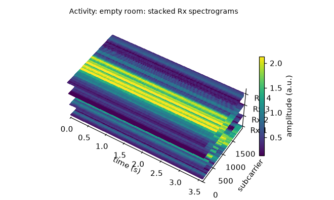
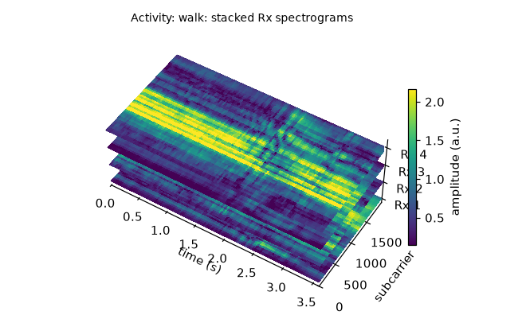
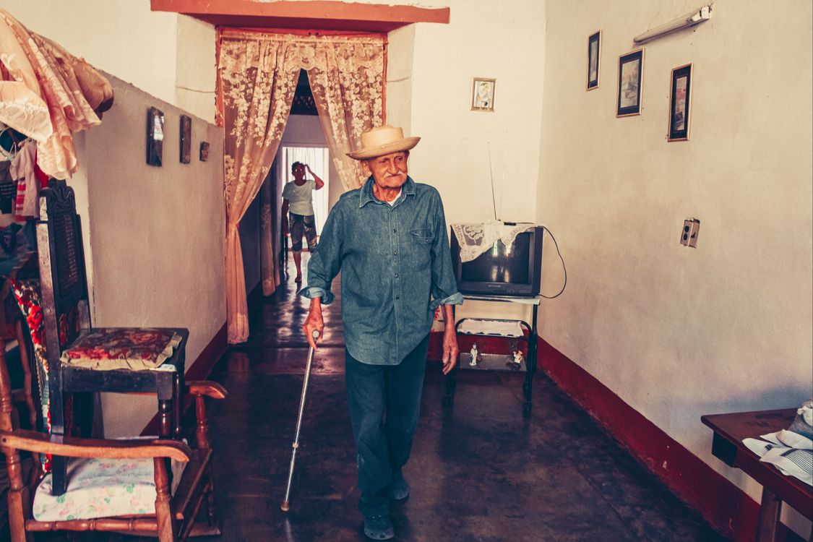

Presence and care
Is someone present, moving, or at risk of falling?
Separate empty-room, routine movement, and fall-like events. Health results remain experimental.
See a fall dataset →For health, home, and education
Channel State Information (CSI) records how people and objects alter WiFi paths for research on motion, presence, location, and breathing.
See how movement changes a WiFi link, then compare a quiet room with walking.
CSI records how the room and a moving person change a known signal across WiFi subcarriers.

Empty room. The bands remain relatively steady over time.

Walking. Motion disturbs the pattern across time and receiver links.
Timeleft to right
Subcarriersfrequency slices
ColorCSI amplitude
Choose the question closest to your work, then inspect datasets collected for it.
Separate empty-room, routine movement, and fall-like events. Health results remain experimental.
See a fall dataset →Learn labeled patterns for walking, sitting, and gestures.
See activity data →Compare receivers or locations for presence and indoor localization.
See localization data →Track subtle periodic motion in controlled recordings.
See NIST BreatheSmart →Every study starts with a person, setting, and label.

Walking, sit-to-stand, and controlled fall-like events.
Explore mobility data → Photo by Mehmet Turgut Kirkgoz via Pexels.Subtle repeated motion during sleep or rest.
Explore breathing data → Photo by cottonbro studio via Pexels.Gestures and actions such as standing or squatting.
Explore activity data → Photo by Ron Lach via Pexels.Turn varied files, axes, and labels into a consistent research view.
Match task, setting, and hardware.
Create named arrays, labels, masks, and provenance.
Check shape, time, missing values, and coverage.
Build task views and reproducible splits.
Use the signal comparison as a short lab or outreach activity.
Start with two labeled traces; introduce CSI structure after students describe what changed.